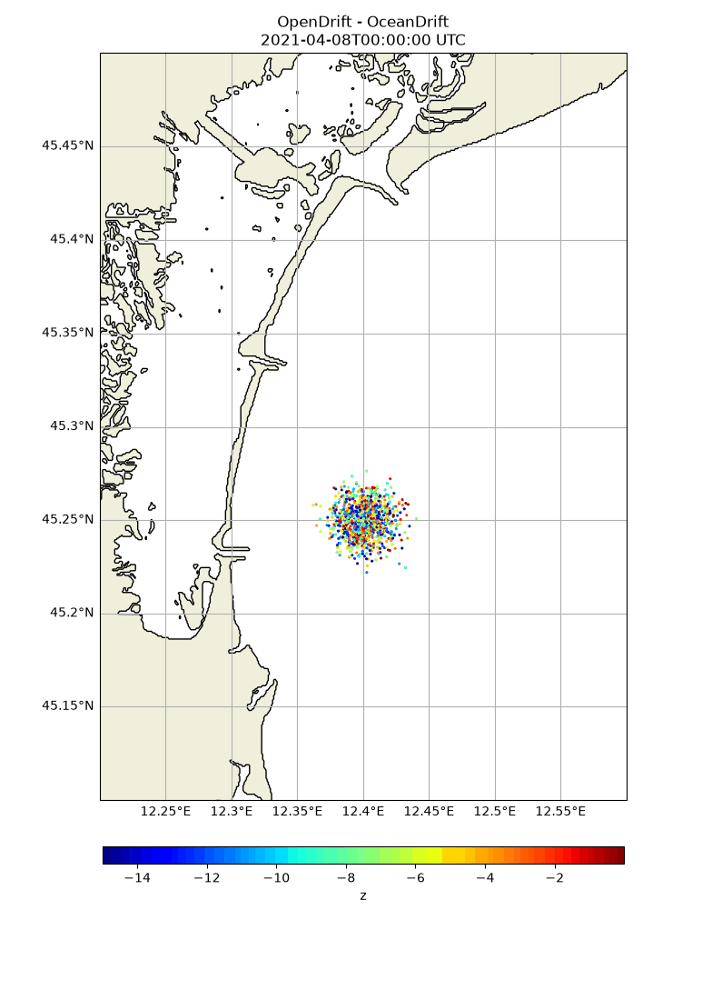
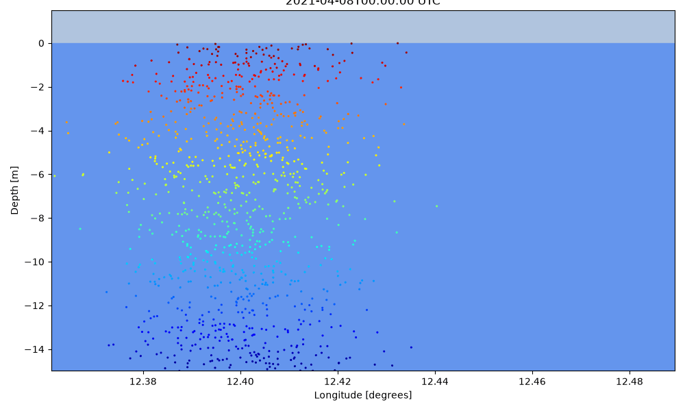
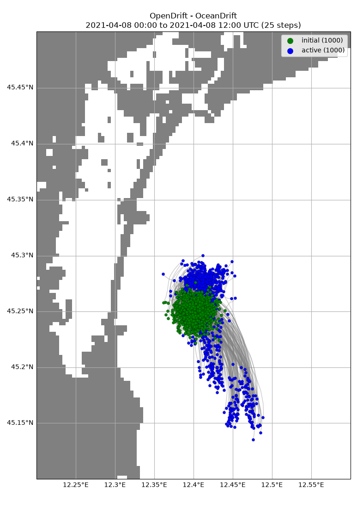

Note
Go to the end to download the full example code.
SHYFEM: Using model input from unstructured grid
from datetime import timedelta
import numpy as np
from opendrift.readers.unstructured import shyfem
from opendrift.models.oceandrift import OceanDrift
o = OceanDrift(loglevel=20) # Set loglevel to 0 for debug information
o.set_config('general:coastline_action', 'previous')
shyfem = shyfem.Reader('https://iws.ismar.cnr.it/thredds/dodsC/emerge/shyfem_unstructured_adriatic.nc')
o.add_reader(shyfem)
print(shyfem)
# Seed elements at defined positions, depth and time
N = 1000
z = -15*np.random.uniform(0, 1, N)
o.seed_elements(lon=12.4, lat=45.25, radius=1000, number=N,
z=z, time=shyfem.start_time)
12:54:03 INFO opendrift:569: OpenDriftSimulation initialised (version 1.14.10 / v1.14.10-15-gd7de102)
12:54:03 INFO opendrift.readers.unstructured.shyfem:67: Opening dataset: https://iws.ismar.cnr.it/thredds/dodsC/emerge/shyfem_unstructured_adriatic.nc
12:54:03 INFO opendrift.readers.unstructured.shyfem:72: Opening file with Dataset
12:54:04 INFO opendrift.readers.unstructured.shyfem:77: Reading grid and coordinate variables..
===========================
Reader: https://iws.ismar.cnr.it/thredds/dodsC/emerge/shyfem_unstructured_adriatic.nc
Reader type: opendrift.readers.unstructured.shyfem
Projection:
+proj=lonlat
Coverage: [degrees]
xmin: 12.240470 xmax: 19.917908
ymin: 39.957329 ymax: 45.799709
Corners (lon, lat):
( 12.24, 45.80) ( 19.92, 45.80)
( 12.24, 39.96) ( 19.92, 39.96)
Vertical levels [m]:
[-0.6000000238418579 -1.600000023841858 -2.5 -3.5 -4.5 -5.5 -7.0 -9.0
-11.0 -13.0 -16.0 -21.0 -27.0 -34.0 -41.5 -50.0 -60.0 -72.5 -90.0 -110.0
-135.0 -175.0 -225.0 -275.0 -350.0 -450.0 -550.0 -650.0 -750.0 -850.0
-950.0 -1050.0 -1155.0]
Available time range:
start: 2021-04-08 00:00:00 end: 2021-04-08 23:00:00 step: None
Variables:
depth
sea_water_salinity
sea_water_temperature
sea_floor_depth_below_sea_level
x_sea_water_velocity
y_sea_water_velocity
water_surface_height_above_reference_datum
sea_water_speed - derived from ['x_sea_water_velocity', 'y_sea_water_velocity']
===========================
0:00:01.3 open dataset
0:00:00.0 build index
12:54:05 INFO opendrift.models.basemodel.environment:203: Adding a global landmask from GSHHG
12:54:09 INFO opendrift.models.basemodel.environment:227: Fallback values will be used for the following variables which have no readers:
12:54:09 INFO opendrift.models.basemodel.environment:230: sea_surface_height: 0.000000
12:54:09 INFO opendrift.models.basemodel.environment:230: x_wind: 0.000000
12:54:09 INFO opendrift.models.basemodel.environment:230: y_wind: 0.000000
12:54:09 INFO opendrift.models.basemodel.environment:230: upward_sea_water_velocity: 0.000000
12:54:09 INFO opendrift.models.basemodel.environment:230: ocean_vertical_diffusivity: 0.000000
12:54:09 INFO opendrift.models.basemodel.environment:230: horizontal_diffusivity: 0.000000
12:54:09 INFO opendrift.models.basemodel.environment:230: sea_surface_wave_significant_height: 0.000000
12:54:09 INFO opendrift.models.basemodel.environment:230: sea_surface_wave_stokes_drift_x_velocity: 0.000000
12:54:09 INFO opendrift.models.basemodel.environment:230: sea_surface_wave_stokes_drift_y_velocity: 0.000000
12:54:09 INFO opendrift.models.basemodel.environment:230: ocean_mixed_layer_thickness: 50.000000
Running model
o.run(time_step=1800, duration=timedelta(hours=12))
12:54:09 INFO opendrift:1903: Skipping environment variable ocean_vertical_diffusivity because of condition ['drift:vertical_mixing', 'is', False]
12:54:09 INFO opendrift:1903: Skipping environment variable ocean_mixed_layer_thickness because of condition ['drift:vertical_mixing', 'is', False]
12:54:09 INFO opendrift:1914: Storing previous values of element property lon because of condition (('general:coastline_action', 'in', ['stranding', 'previous']), 'or', ('general:seafloor_action', 'in', ['previous']))
12:54:09 INFO opendrift:1914: Storing previous values of element property lat because of condition (('general:coastline_action', 'in', ['stranding', 'previous']), 'or', ('general:seafloor_action', 'in', ['previous']))
12:54:09 INFO opendrift:1922: Storing previous values of environment variable sea_surface_height because of condition ['drift:vertical_advection', 'is', True]
12:54:09 INFO opendrift:955: Using existing reader for land_binary_mask to move elements to ocean
12:54:09 INFO opendrift:986: All points are in ocean
12:54:09 INFO opendrift:2211: 2021-04-08 00:00:00 - step 1 of 24 - 1000 active elements (0 deactivated)
12:54:10 INFO opendrift:2211: 2021-04-08 00:30:00 - step 2 of 24 - 1000 active elements (0 deactivated)
12:54:10 INFO opendrift:2211: 2021-04-08 01:00:00 - step 3 of 24 - 1000 active elements (0 deactivated)
12:54:10 INFO opendrift:2211: 2021-04-08 01:30:00 - step 4 of 24 - 1000 active elements (0 deactivated)
12:54:11 INFO opendrift:2211: 2021-04-08 02:00:00 - step 5 of 24 - 1000 active elements (0 deactivated)
12:54:11 INFO opendrift:2211: 2021-04-08 02:30:00 - step 6 of 24 - 1000 active elements (0 deactivated)
12:54:12 INFO opendrift:2211: 2021-04-08 03:00:00 - step 7 of 24 - 1000 active elements (0 deactivated)
12:54:12 INFO opendrift:2211: 2021-04-08 03:30:00 - step 8 of 24 - 1000 active elements (0 deactivated)
12:54:12 INFO opendrift:2211: 2021-04-08 04:00:00 - step 9 of 24 - 1000 active elements (0 deactivated)
12:54:13 INFO opendrift:2211: 2021-04-08 04:30:00 - step 10 of 24 - 1000 active elements (0 deactivated)
12:54:13 INFO opendrift:2211: 2021-04-08 05:00:00 - step 11 of 24 - 1000 active elements (0 deactivated)
12:54:13 INFO opendrift:2211: 2021-04-08 05:30:00 - step 12 of 24 - 1000 active elements (0 deactivated)
12:54:14 INFO opendrift:2211: 2021-04-08 06:00:00 - step 13 of 24 - 1000 active elements (0 deactivated)
12:54:14 INFO opendrift:2211: 2021-04-08 06:30:00 - step 14 of 24 - 1000 active elements (0 deactivated)
12:54:14 INFO opendrift:2211: 2021-04-08 07:00:00 - step 15 of 24 - 1000 active elements (0 deactivated)
12:54:15 INFO opendrift:2211: 2021-04-08 07:30:00 - step 16 of 24 - 1000 active elements (0 deactivated)
12:54:15 INFO opendrift:2211: 2021-04-08 08:00:00 - step 17 of 24 - 1000 active elements (0 deactivated)
12:54:16 INFO opendrift:2211: 2021-04-08 08:30:00 - step 18 of 24 - 1000 active elements (0 deactivated)
12:54:16 INFO opendrift:2211: 2021-04-08 09:00:00 - step 19 of 24 - 1000 active elements (0 deactivated)
12:54:16 INFO opendrift:2211: 2021-04-08 09:30:00 - step 20 of 24 - 1000 active elements (0 deactivated)
12:54:17 INFO opendrift:2211: 2021-04-08 10:00:00 - step 21 of 24 - 1000 active elements (0 deactivated)
12:54:17 INFO opendrift:2211: 2021-04-08 10:30:00 - step 22 of 24 - 1000 active elements (0 deactivated)
12:54:17 INFO opendrift:2211: 2021-04-08 11:00:00 - step 23 of 24 - 1000 active elements (0 deactivated)
12:54:18 INFO opendrift:2211: 2021-04-08 11:30:00 - step 24 of 24 - 1000 active elements (0 deactivated)
Print and plot results
print(o)
===========================
--------------------
Reader performance:
--------------------
https://iws.ismar.cnr.it/thredds/dodsC/emerge/shyfem_unstructured_adriatic.nc
0:00:01.3 open dataset
0:00:00.0 build index
0:00:08.2 total
0:00:00.0 preparing
0:00:08.2 reading
0:00:00.0 masking
--------------------
global_landmask
0:00:00.0 total
0:00:00.0 preparing
0:00:00.0 reading
0:00:00.0 masking
--------------------
Performance:
15.0 total time
6.0 configuration
0.1 preparing main loop
0.0 moving elements to ocean
8.8 main loop
0.0 updating elements
0.0 cleaning up
--------------------
===========================
Model: OceanDrift (OpenDrift version 1.14.10)
1000 active Lagrangian3DArray particles (0 deactivated, 0 scheduled)
-------------------
Environment variables:
-----
sea_floor_depth_below_sea_level
x_sea_water_velocity
y_sea_water_velocity
1) https://iws.ismar.cnr.it/thredds/dodsC/emerge/shyfem_unstructured_adriatic.nc
-----
land_binary_mask
1) global_landmask
-----
Readers not added for the following variables:
horizontal_diffusivity
sea_surface_height
sea_surface_wave_significant_height
sea_surface_wave_stokes_drift_x_velocity
sea_surface_wave_stokes_drift_y_velocity
upward_sea_water_velocity
x_wind
y_wind
Discarded readers:
Time:
Start: 2021-04-08 00:00:00 UTC
Present: 2021-04-08 12:00:00 UTC
Calculation steps: 24 * 0:30:00 - total time: 12:00:00
Output steps: 25 * 0:30:00
===========================
Animations
o.animation(color='z', markersize=5, corners=[12.2, 12.6, 45.1, 45.5])
o.animation_profile(color='z', markersize=5)
12:54:29 INFO opendrift:4782: Saving animation to /root/project/docs/source/gallery/animations/example_shyfem_0.gif...
12:54:39 INFO opendrift:3202: Time to make animation: 0:00:20.796732
12:54:39 INFO opendrift:4782: Saving animation to /root/project/docs/source/gallery/animations/example_shyfem_1.gif...
12:54:44 INFO opendrift:3420: Time to make animation: 0:00:04.820097


o.plot(fast=True, buffer = 1., corners=[12.2, 12.6, 45.1, 45.5])

12:54:44 WARNING opendrift:2574: Plotting fast. This will make your plots less accurate.
(<GeoAxes: title={'center': 'OpenDrift - OceanDrift\n2021-04-08 00:00 to 2021-04-08 12:00 UTC (25 steps)'}>, <Figure size 773.734x1100 with 1 Axes>)
Total running time of the script: (0 minutes 52.516 seconds)